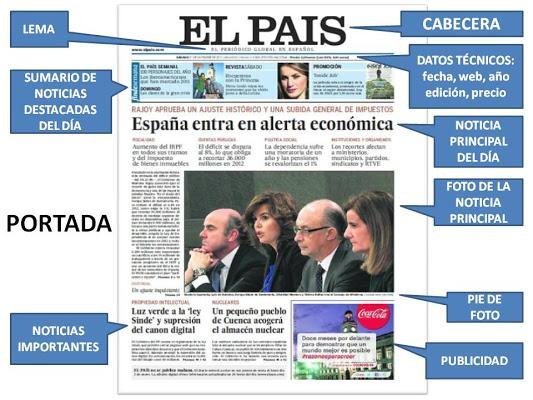

La cabecera

Las partes principales de la portada de un periódico incluyen: la cabecera (nombre, logotipo y lema del periódico), el titular principal y otras noticias destacadas, la fotografía principal, el sumario o índice que lista el contenido interno, y datos técnicos como la fecha, el número de ejemplar, el precio y a veces las "orejas" (pequeños espacios con información adicional). La portada funciona como un escaparate que busca captar la atención del lector con las noticias más relevantes del día.
Elementos de la portada
Cabecera: Ubicada en la parte superior, incluye el nombre del periódico, su logotipo (el dibujo o símbolo que lo identifica) y su lema (una frase que define su línea ideológica).
Titular principal: La frase más destacada que resume la noticia más importante del día, escrita con letra grande y llamativa.
Fotografía principal: Una imagen impactante que ilustra la noticia principal.
Sumario o índice: Una lista que indica el contenido del interior del periódico, con los títulos de las secciones y las páginas donde se encuentran.
Datos técnicos: Incluyen la fecha de la edición, el número de ejemplar, el precio y, a veces, los años de publicación.Noticias secundarias: Titulares y breves resúmenes de otras noticias importantes que aparecen distribuidas en la portada.Orejas: Pequeños recuadros o espacios publicitarios, ubicados en las esquinas superiores de la portada.